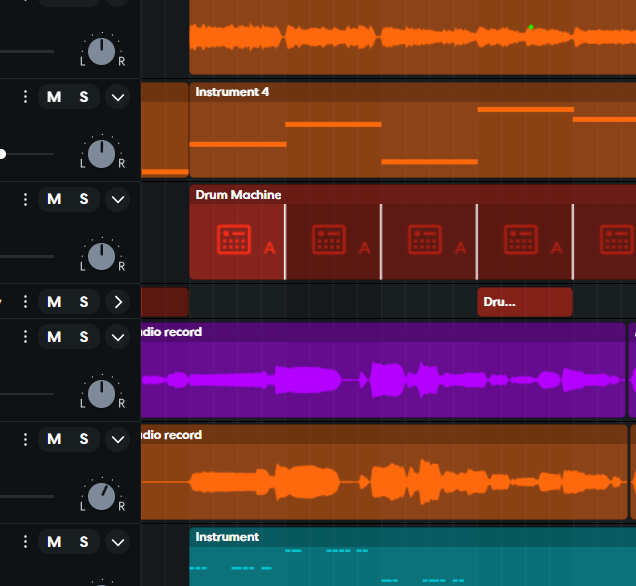
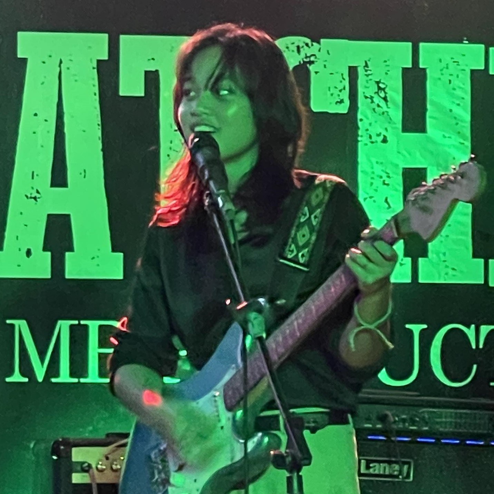

Performer |
| Producer
ABOUT ME
Hi, I'm Guinevere Tendero, most people call me Gwen
Currently in my freshman year at Far Eastern University Insititute of Technology. Although I specialize in IT cybersecurity, my first specialty is music. I've been composing and producing music at home for school projects and graduations. Be it for films, events, or a school requirement, I don't disappoint. You can ask my alma mater for that.
This track is a demo of my band's first original song. I composed it during the pandemic back in 2021 when the band was eager to perform as a real band instead of just being a cover band which we all started from. The whole band collaborated in this demo, except for the vocalists who have yet to record their vocals.
It was a tradition in my school, Mater Carmeli School of Nova, to have a graduation song, so I was tasked to compose a song that expresses appreciation and farewell to the academy. In order to make the song exhibit the unique qualities that could be referred to the school, I based the lyrics and melody on the school's hymn, "Dear Sweet Carmeli."
This special song was created as a tribute to my batchmates throughout my years of learning since first grade. Both this and "Dearest Sweet" were the assigned songs to be performed by various singers on stage when our senior high school graduation commenced. Its theme was set to be a friendship song, so I fixed the rhythm to be more upbeat. A batchmate of mine helped me with the lyrics.


Phone Number
+639617183423
Emails
gwntendero@gmail.com
gwentendero8224@gmail.com